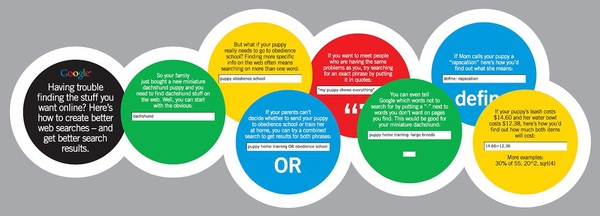
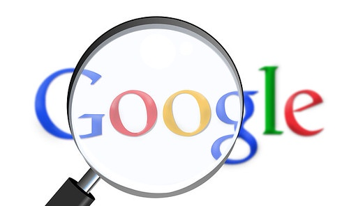

Google Stepped In
Imagine a world without Google, seriously a world without Google where you couldn't do detailed search on your blind date for tomorrow night. Few years ago there was no Google and before that there was no way to search. Navigating the web so easily was not always the case. Back in the early stages of the world wide web, search engines were not a thing. If you wanted to find some information you would need to search the internet for hours and hope you got lucky with whatever rabbit hole you went into.
Jerry Yang and David Filo who were graduate students at Stanford University, in an attempt to win a fantasy basketball league started searching the internet for up to date statistics in order to make better informed decisions. They lost upon the issue where they had no easy way to navigate or search for the information they needed which greatly lengthened their research process. This is when they developed a guide to help new web users navigate the internet, the original idea was a page that had various topics and web pages sorted into each of them. The new name of this company the two made was Yahoo.
Excite started another search startup around the time which had a more technical approach on search than yahoo. Instead of having humans sort pages into various topics, their search would look for relevance within the pages it searched. Yahoo and Excite battled over technical success by being on the forefront of each other's additions, for example releasing emails and having the other incorporate email as well. The search engine companies got caught up in the competition that they lost site of their foundational products which was searched.
While the battle between Excite and Yahoo ran on, a new search company began its inception, the name of this company was Google. Google used a technological approach like Excite however, they also incorporated determining relevance by views. By taking into account relevance, the search engine was able to become more effective than the other search engines. Google pitched their technology to search engine companies all over the valley which none gave them an offer. They had failed to sell their technology and the future looked dim for the small startup, until they met with an investor named Bechtolsheim who invested one hundred thousand dollars in them and this was followed by twelve million from other venture capital investors in the valley.

Google had essentially solved the single hardest problem on the internet but did not have the ability to make money at the time. They also refused to take money from advertisements like their competitors Yahoo and Excite. Google then learned about Bill Gross idea, who saw search engine data collection as the world’s most powerful market research tool. Google had essentially taken Gross idea which he incorporated into his site overture.com as the solution to their monetary business problem. Bill Gross eventually sued Google for similarities on his idea which they had made a settlement out of court.
On August, 19th 2004, Google went public and listed its shares on the New York Stock Exchange. Wall Street had been angered by Google’s IPO process since they decided to carry out their offering in an unconventional way which received much criticism. In the end, the Google IPO was an ultimate success and now we know it as the tech giant it is today.
